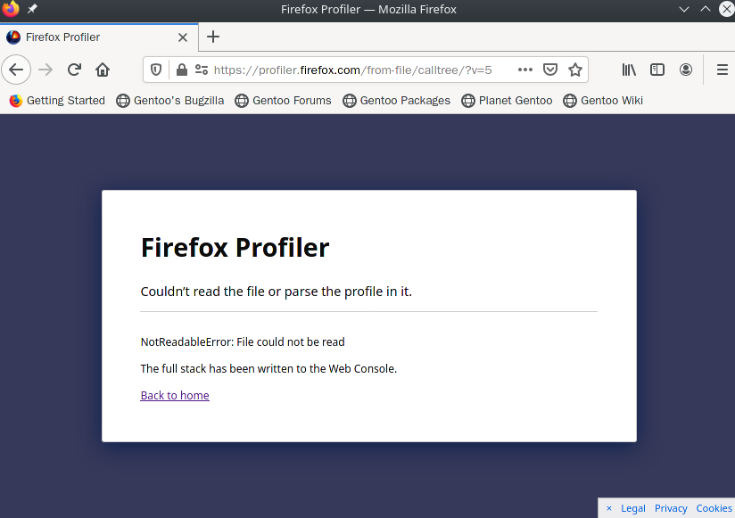
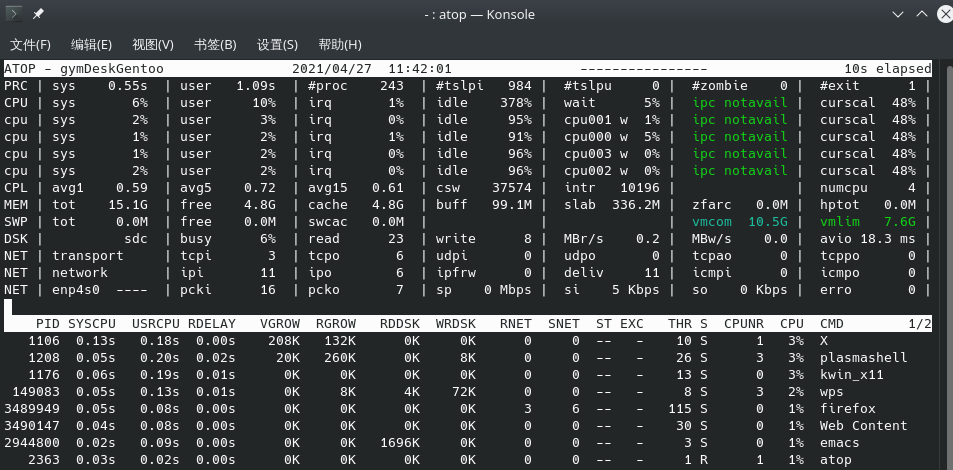
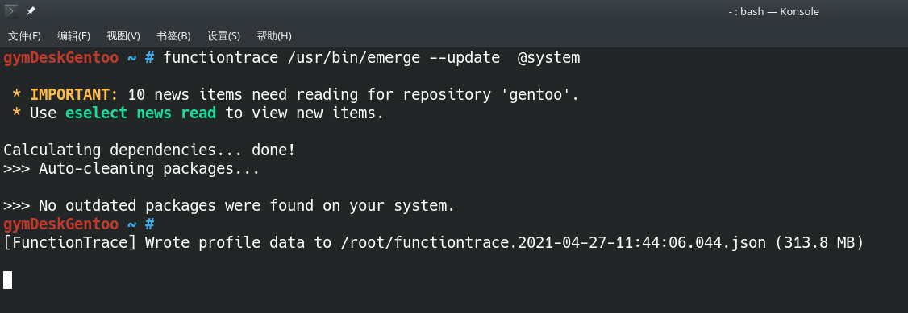

接 https://www.zhihu.com/question/456651702/answer/1856061693 帖子，从哪里开始呢？我刚好干到这里： https://forums.gentoo.org/viewtopic-p-8603250.html#8603250

额，貌似文件有点大了，内存应该够啊

换个小点的抓

这回打开了，什么“backtrack_depgraph” 从方法名上可以猜出是回溯依赖关系的，但这里有个问题， emerge_main 感觉是主程序，应该只调用一次，但应该有个在安装包列表上的循环啊，这幅图没有列出方法调用的次数啊, 不知别的Profiler 如何？

这会儿再尝试别的Profiler 有点费时间，先凑合，毕竟 profiler 只看个全局大概，后面 debugger 更重要。
在 depgraph.py 设个断点试试。貌似上图这个长长的路径文件名复制不出来啊，好吧， locate 一下再从结果复制吧：

执行命令： python -m pudb /usr/lib/python3.8/site-packages/_emerge/depgraph.py

然后按 / 进入search, 输入 _select_files (就是前面Profiler结果里面看到的方法名)， “/” 键进入 search状态，这个很奇妙吧， 和Linux 内核配置 make menuconfig 里面一致！
界面提示 ？ 键提供帮助，我第一次试是这样的，后来不知道为啥 F1 帮助，？ 进入search 状态了，但 / search依然有效。帮助界面里面提示如何搜索前一个后一个等。
找到“喜欢的”代码行后， 按键 b 设置断点（这个键和 gdb, pdb 都一致， breakpoint 嘛，大家没异议）
虽然我还看不出这个 _select_files 方法是干啥用的，但注释里面提到了 .ebuilds sets.
.ebuild 文件就是配置每个包的编译以及依赖关系的，我的理解是一个 Bash 文件， 会被 ebuild.sh 通过 source 命令加载。而这个 ebuild.sh 是被这些 “emerge， portage”Python 代码调用的

按键 q 退出，然后
nano /usr/lib/python3.8/site-packages/_emerge/main.py
在文件开始加入代码
from pudb import set_trace; set_trace(paused=False)
表示加载 pudb 开始调试，但此处并不中断执行: https://documen.tician.de/pudb/usage.html

Ctrl+X退出，nano 的好处就是常用快捷显示在底部。有个段子说让一个新手尝试退出 vi 编辑器，产生的按键序列将会是一个随机数。
接下来运行 emerge --update @system
不久，就弹出pudb界面，停在刚设的断点上：

可以用光标上下左右键在各个窗格间移动，查看调用栈（stack） 各级的代码和变量值（Variables）,及设置更多断点。不会觉得自己少生了一只照顾鼠标的手。